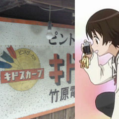

レトロタウン竹原。
ピントぴったり
キドスカープ
竹原電化
赤のイメージから
ご当地、広島
東洋カープの
関連グッズかと
勘ぐったりしましたが
違いました。
スカープとは
スコープの事ですね、
きっと。
どうやら
キドカラーの
後継機種が
キドスカープと
いう事のようです。
池上彰さんが
言うには
キドは
輝度と希土類の
ダブルミーニング
なんだそうで。
キドカラー
カラーテレビの
輝度を上げるため、
ユウロピウムや
テルビウム
といった希土類元素を
ブラウン管内部の
蛍光体材料として
用いたことによる。
（中略）
当時、赤色の
発色の良さを
売り物にしていた。
ウィキから引用
それで、看板も
赤のイメージを
使ったんですか。
なるほど。
何かと話題の
レアアースですが。
さてさて・・・。
©佐藤順一
ＴＹＡ
たまゆら製作委員会